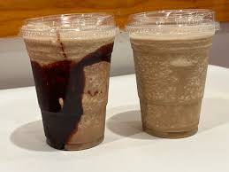

mocha
Home

Cold Brew Mocha Freeze
Beat the heat with this decadent Cold Brew Mocha Freeze!
It combines smooth, cold brew coffee with rich chocolate and creamy milk,
all blended with ice until perfectly slushy.
It's like your favorite coffee shop frappé,
but better (and cheaper) to make at home.
Top it with whipped cream and a chocolate drizzle for the ultimate iced coffee indulgence.
Ingredients
- 2 cups ice cubes
- 1 cup cold brew coffee concentrate (chilled)
- ½ cup milk (dairy, oat, or almond)
- ¼ cup chocolate syrup (plus extra for drizzling)
- 2 tablespoons sweetener (simple syrup, maple syrup, or sugar; adjust to taste)
- ½ teaspoon vanilla extract (optional, but recommended)
Steps
- Drizzle: Drizzle a little chocolate syrup inside your serving glass and set it aside.
- Blend: In a blender, combine the ice, cold brew concentrate, milk, chocolate syrup, sweetener, and vanilla.
- Pulse: Blend until the mixture is smooth and has a slushy consistency.
- Pour: Pour the mixture into the prepared glass.
- Top: Garnish with whipped cream and an extra drizzle of chocolate syrup. Serve immediately